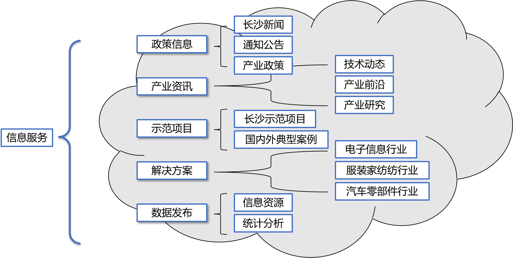
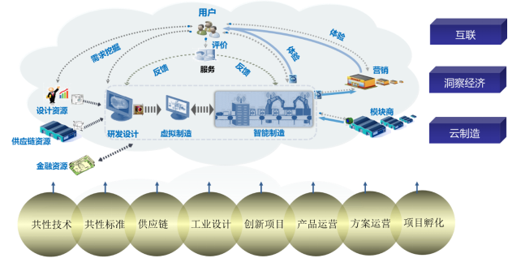
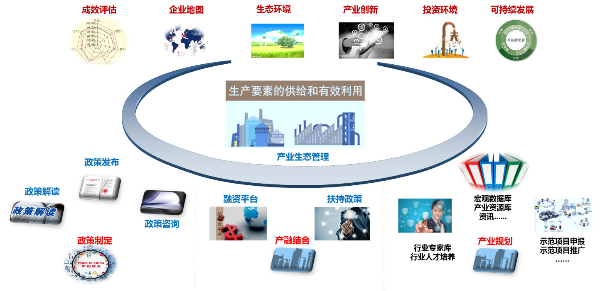
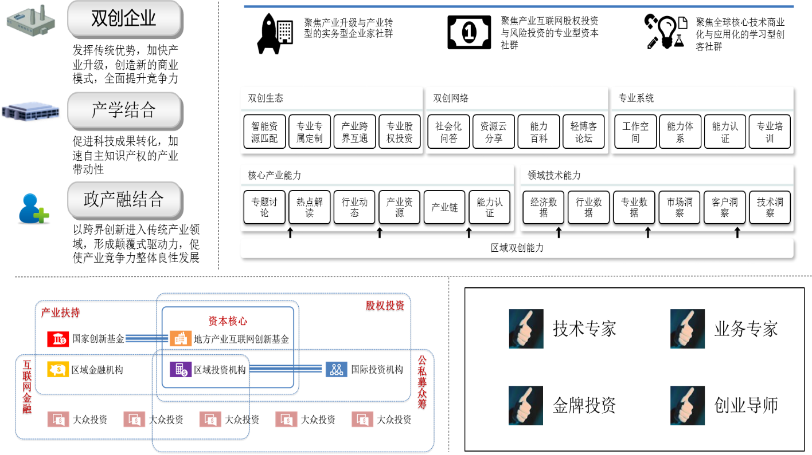
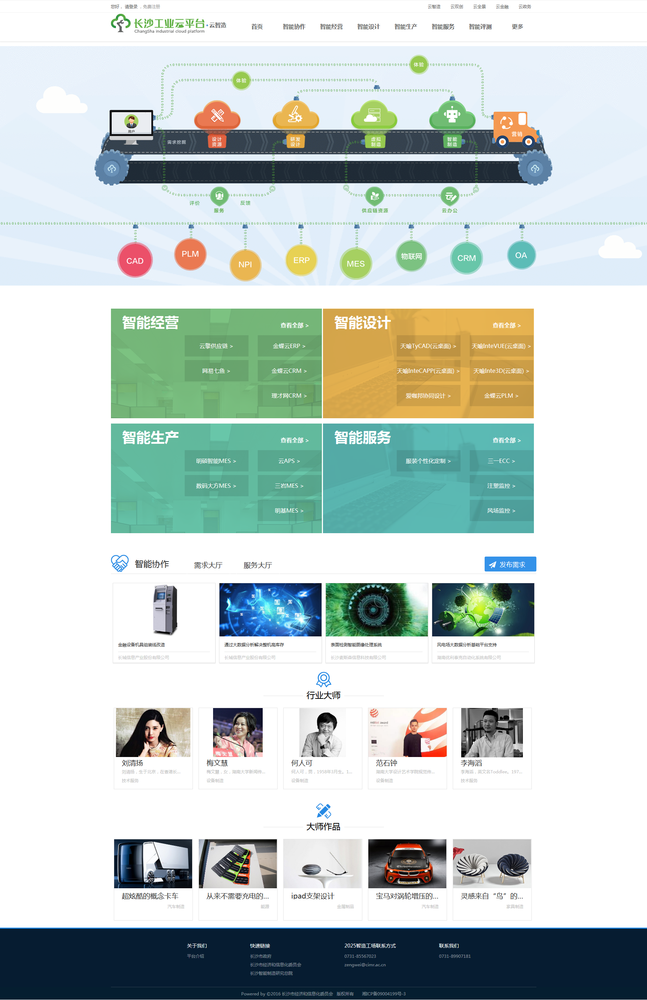
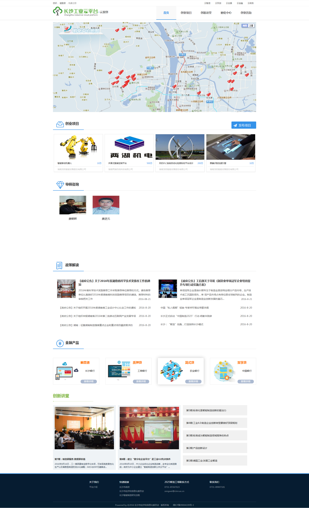
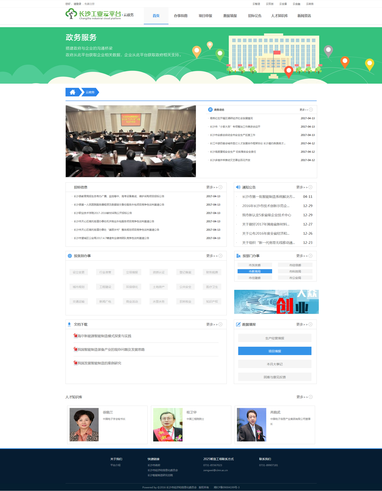
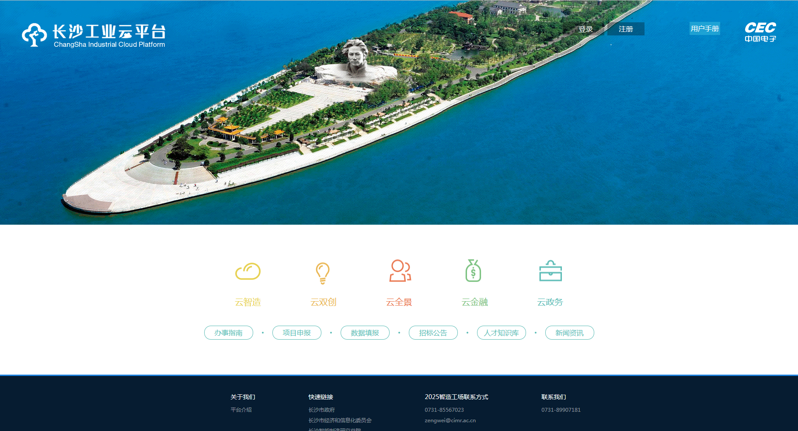

一、“工业云”平台定位
“互联网+”政务服务
聚焦长沙工业制造企业，实现网上企业资源的充分共享、智能制造能力的高度协同、全产业链各环节的业务协同，实现在线互联与共享，促进传统产业转型升级。
“互联网+”协同制造
云智造应用着力服务于长沙制造的四个方面，1.大力发展智能制造；2.提升网络化协同制造水平；3.发展大规模个性化定制；4.加速制造业服务业转型。
“互联网+”创新创业
以丰富的制造资源和服务资源为依托，构建开放公平的互联网创业平台与配套服务体系，推动大众创业、万众创新。
“互联网+”共享经济
通过长沙工业云共享平台的建设，做大长沙高新技术产业、现代服务业等新兴产业集群，提高资源利用效率，打造动力强劲的新引擎，促进长沙分享经济发展。
二、“工业云”平台概览

（一）信息服务
基于长沙“工业云”平台的数据积累，通过大数据分析技术的引入，对制造资源数据、行业数据和互联网数据等信息要素分析，形成不同行业、不同层次、不同地域的智能制造指数及指标。为企业提供市场对接、产品定位、质量改进等分析信息，为企业创新发展提供数据支撑，为政府更准确的把握智能制造产业发展情况，制定更合理的扶持政策，同时，为更科学的调控产业生态提供支持。

（二）应用服务
为制造企业提供云应用服务，以云智造服务和大数据分析为核心，涵盖生产制造全过程和全要素，重构产品生命周期管理（CAD/CAE/CAPP/CAM/PLM）、企业资源规划（ERP）、供应链管理（SCM）和客户关系管理（CRM）等制造业核心软件，形成新型工业云服务，构建“互联网+”智慧工业云平台，推动工业企业互联网化，形成全行业与跨行业的工业应用生态系统。

（三）政务服务
以工业云为服务抓手，构筑政府、产业、资本、科研、众创众筹等产业生态要素的良性互动生态圈，实现企业资源的充分共享、政府资源的精准支持、创新能力的高度协同、金融资本的高效催化、全产业链环节的业务协同，提供共性服务，降低企业成本，提高生产效率，促进生产要素的供给和有效利用。

（四）双创服务
立足于长沙本地，整合互联网开放的资源优势，聚集众多高校院所及科研机构，领军企业，领军人才，专业服务机构，双创主体，侧重于智能制造行业的相关领域，及设计创新，项目创新，技术创新，产品创新，服务模式创新，绿色发展创新等为主题。

案例部分图片展示



